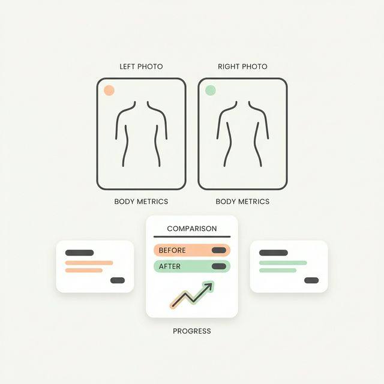
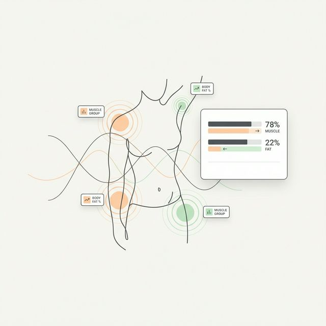
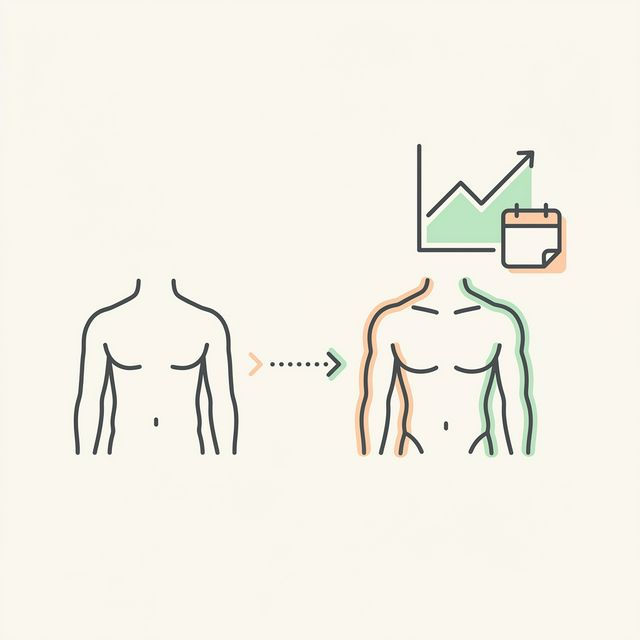
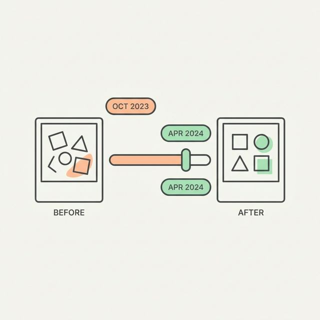
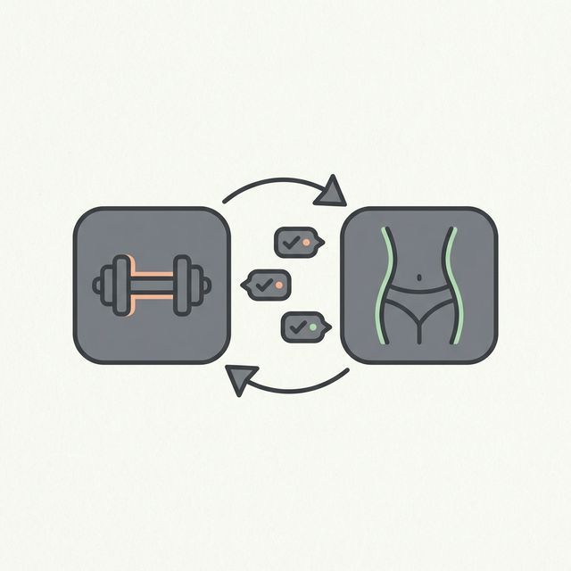
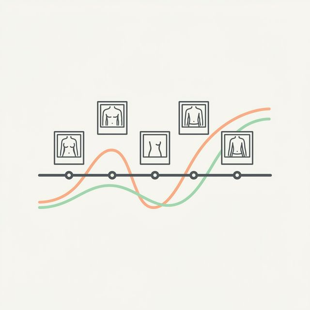
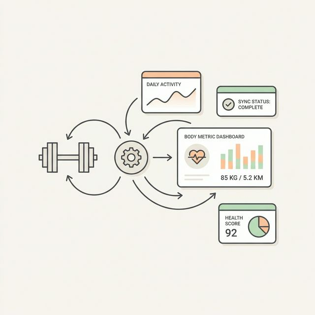
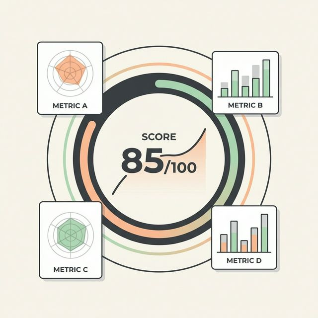

Tips, training science, and product updates for gym-goers who track with photos.

Move beyond "I think I look bigger." See objective data on your body fat transitions, specific muscle upgrades, and what your next phase demands.

Body fat %, expanded muscle group scoring, posture analysis, and calculated daily macros — now tailored to your exact fitness goals.

Your AI-generated future self isn't a gimmick — it's built from your actual progress data. Here's how the prediction engine analyzes your trajectory and generates projected stats.

Misaligned photos, inconsistent lighting, and no data — comparing progress photos used to be a mess. Here's what changed with AI-powered alignment and body composition overlays.

You track every set, rep, and pound of volume in Hevy. Now connect that data directly to your visual progress photos with GainFrame.

Daily snapshots, quarterly overviews, and auto-generated transformation videos — three zoom levels that turn months of gym selfies into a visual story.

Your workout volume, exercises, and sets — auto-attached to the exact photo taken that day. Plus hands-free album sync that keeps your timeline current.
Consistent lighting, the ghost overlay camera, and auto body alignment — maximize your comparison quality with these simple habits.

Your GainFrame Score rates your physique on a 100-point scale. Here's exactly what goes into the calculation — and how to improve it.
Be the first to try GainFrame. New features, training tips, and launch updates — straight to your inbox.
Free · No spam · Unsubscribe anytime